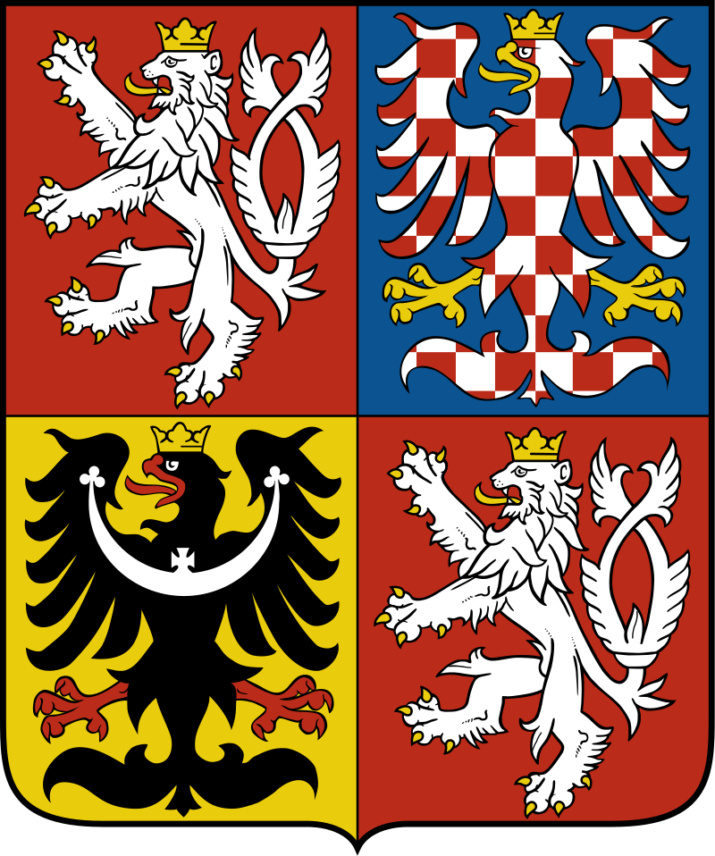
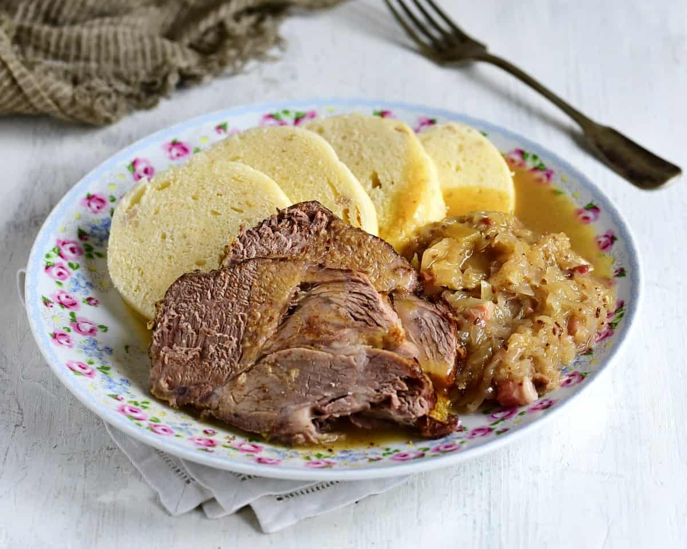

Vepřo Knedlo Zelo


A Czech dish that encompasses roast pork, dumplings, and sauerkraut (as the name implies through English translation!) with gravy.
Ingredients
- Pork Shoulder: 900 g (2 Ibs.)
- Onions: 6
- Cloves of Garlic: 5
- Pork Lard OR Vegetable Oil: 1 tablespoon
- All-Purpose Flour: 1 tablespoon
- Salt
- Pepper
- Water: 3 cups (720 mL)
Steps
- Preheat the oven to 320°F (160°C). Cut onion roughly. Peel cloves of garlic and press them.
- Salt the meat generously. Dust it with pepper and crushed caraway seeds from all sides. Then rub the pressed garlic onto the pork.
- Grease a roasting pan with lard. Pour the onion over the bottom of the pan. Place the seasoned meat on the onion. Pour in 1 cup of water.
- Roast the pork uncovered for 2-2.½ hours or until soft. Flip the meat from time to time, that it has a nice brown color over the whole surface. Also, stir the onion occasionally to prevent it from burning. If all the water evaporates, add ⅓ cup more.
- Transfer roasted meat to a clean plate, cover with foil, and keep it warm.
- Make the gravy. Place the uncovered roasting pan with onion on the stove over medium heat. Reduce the juices to a necessary minimum. Stir occasionally.
- Add all-purpose flour and fry for 1 minute while stirring, preferably with a flat spatula; you can scrape the bottom of the pan to avoid burning flour.
- Pour in 2 cups of water, stir well, and bring to a boil. Reduce heat to 1/3 and let the gravy simmer for 20 minutes.
- Strain the gravy through a sieve—season with pepper and salt to fit your taste.
- Serve warm: a slice of pork roast, braised sauerkraut, and sliced dumplings. Pour the gravy over the meat and sauerkraut.
You can cover the pan with a lid to speed up the cooking at the beginning of roasting. Remove the lid after 30 minutes and allow the roast to get a nice brown crust.
Source: Bigos (Polish Hunter's Stew)